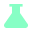
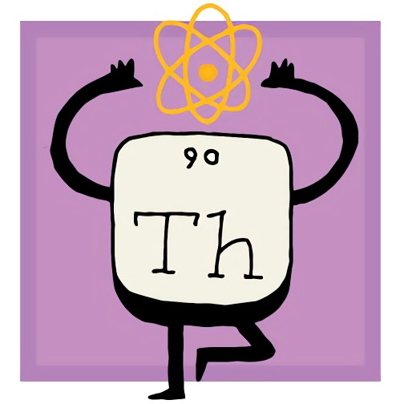

Thorium -
The fastest browser on Earth.

Chromium fork for Linux, Windows, MacOS, Android, and Raspberry Pi named after radioactive element No. 90.
This nets a 8-38% performance improvement over vanilla Chromium, depending on the benchmark and OS. See PATCHES.md for a detailed overview of all modifications compared to vanilla Chromium regarding performance, security and useability.
See also : ThoriumOS & TrImLy
See also : The Chromium Story
See also : Thorium HTML5 Games!
See also : 3D Web Demos!
See also : Material Design Interactives
See also : About Me 
See also : Mercury Browser (Firefox Fork)
See also : Atom-ng (Atom Editor Fork)
Website under construction. Δ Meanwhile, you can check out the main repository, read the developer blog, view the release notes, or download releases for:
I have also created some Chrome Extensions and Apps for use with Thorium/ThoriumOS:
The repo can be used on any distribution that supports .deb packaging.
It is located at https://dl.thorium.rocks/. To add to your system:
wget https://dl.thorium.rocks/debian/dists/stable/thorium.list sudo mv thorium.list /etc/apt/sources.list.d/ sudo apt update sudo apt install thorium-browser
Thanks for using Thorium! Code Of Conduct/Privacy Policy: CoC
Credits: HuMaNs ⚧ 404 Test Page: blah Dad's Old Site: danfrick.com
